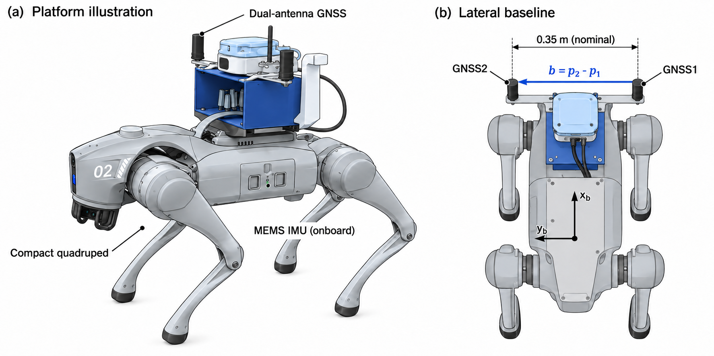
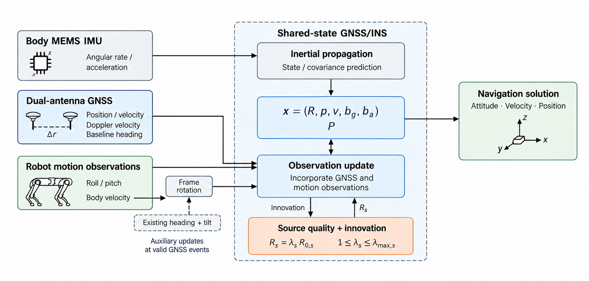
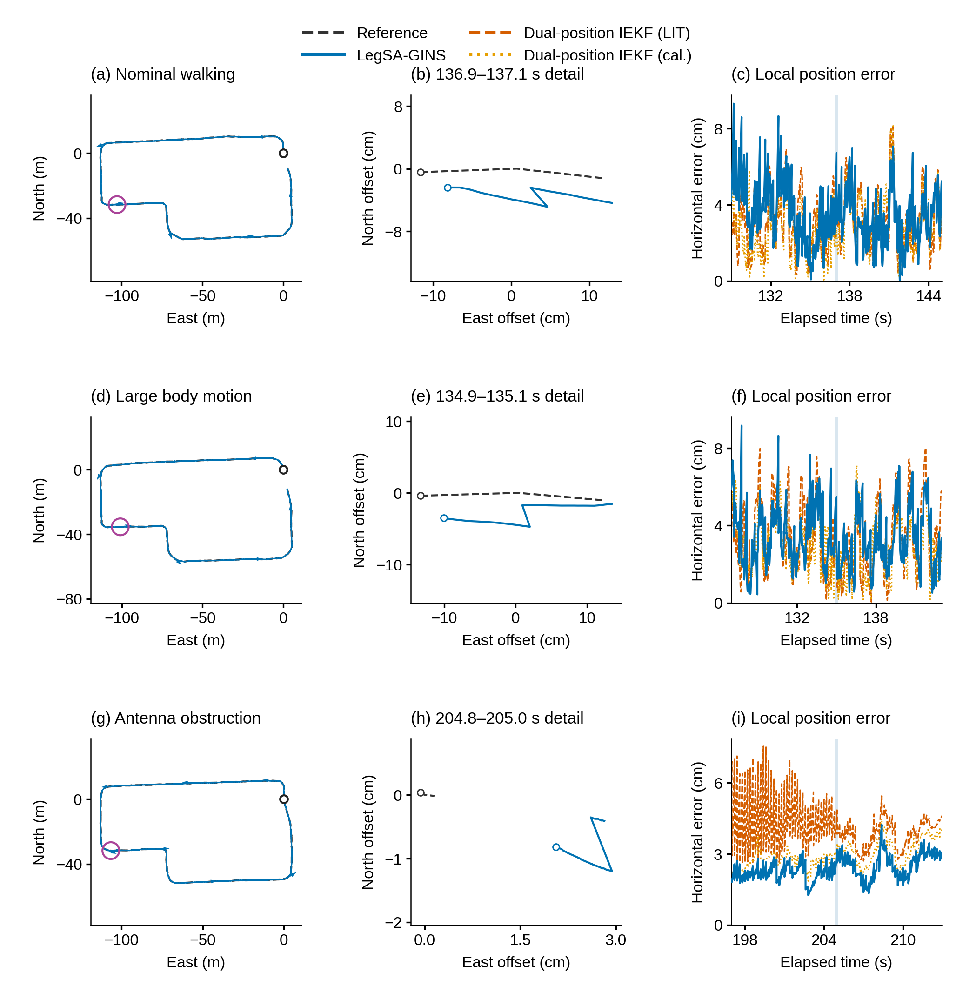
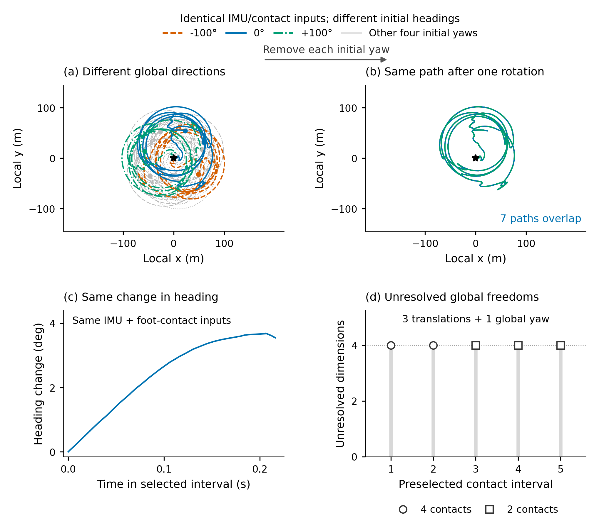
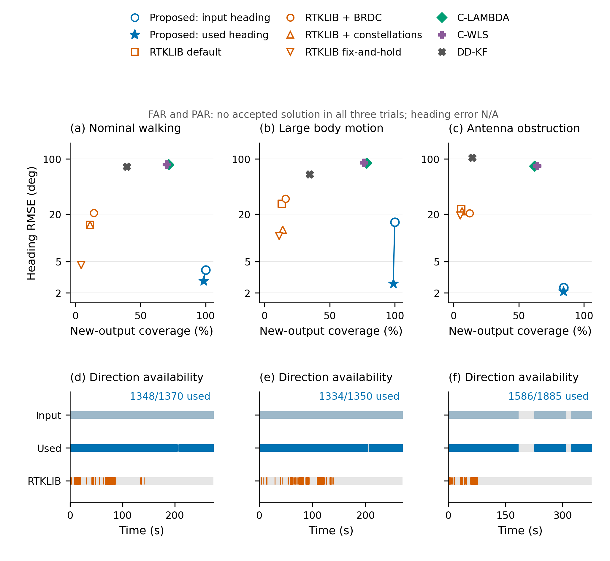
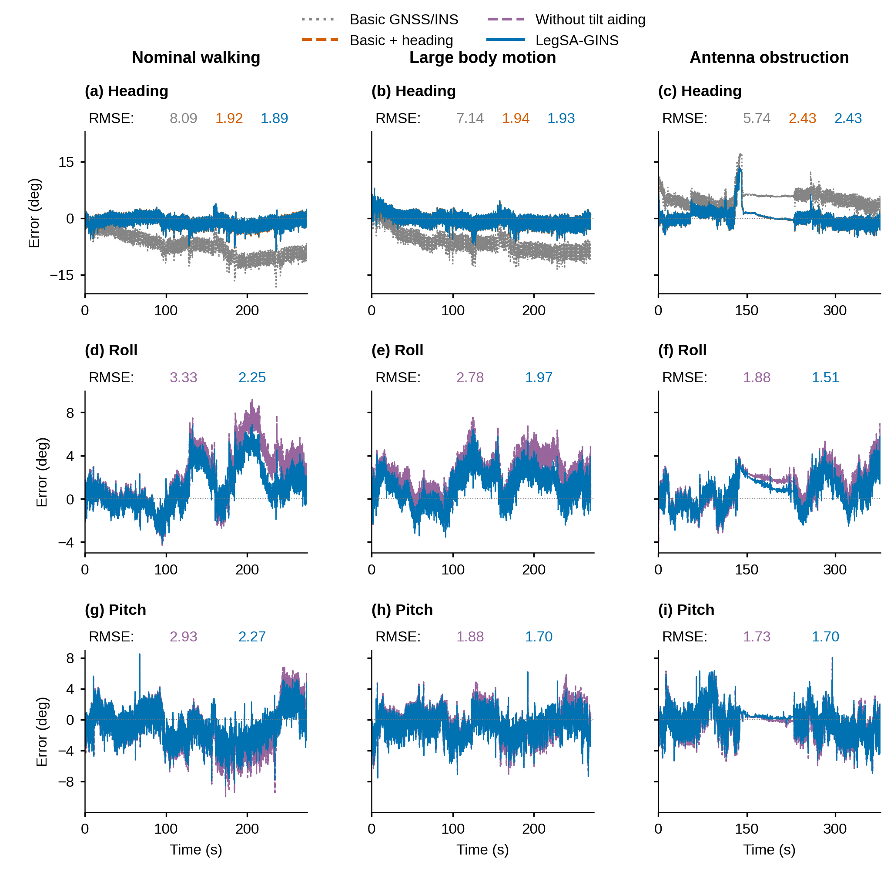
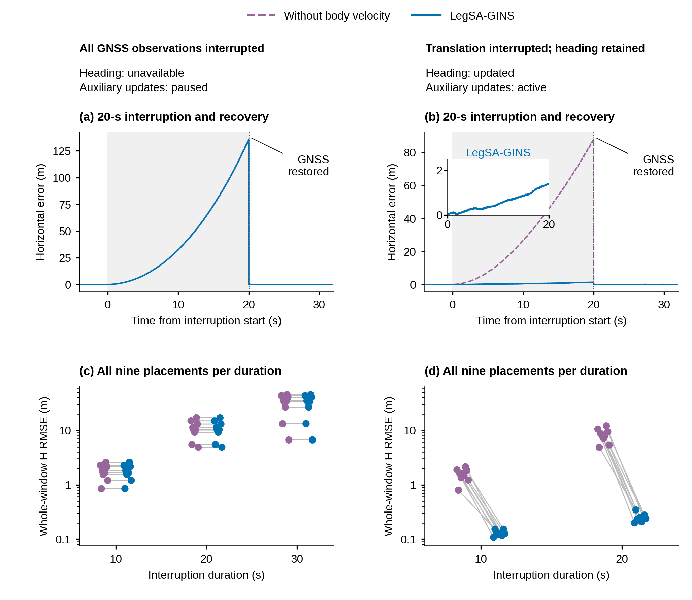
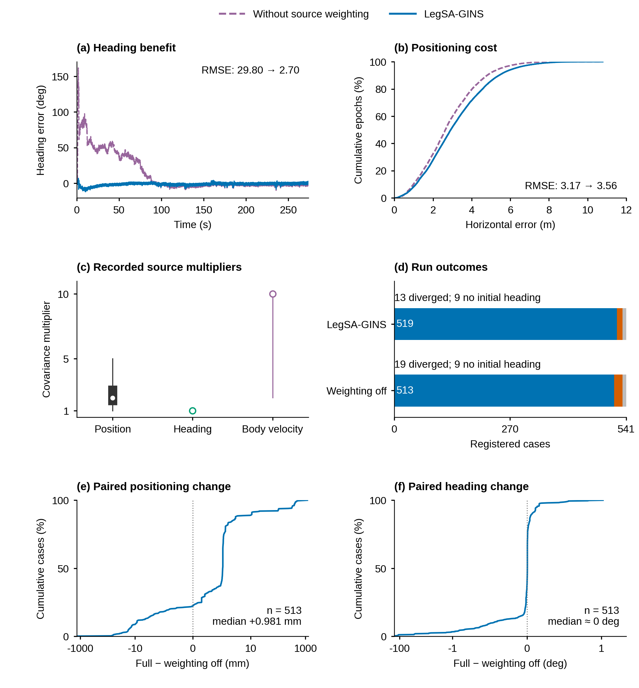
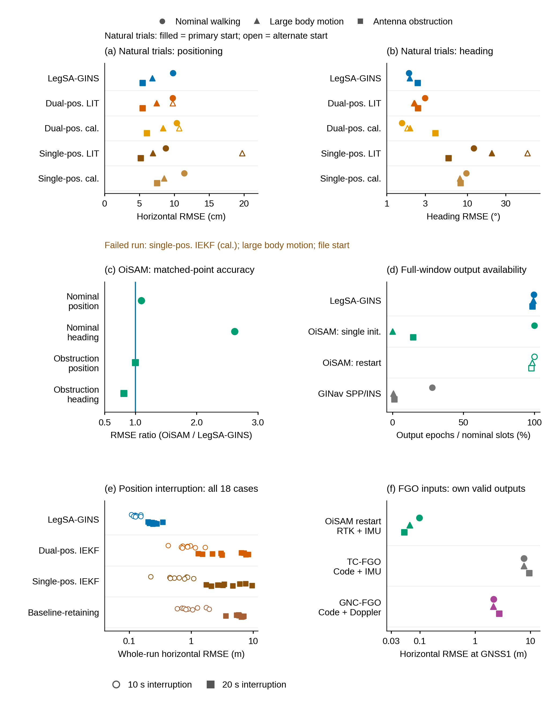
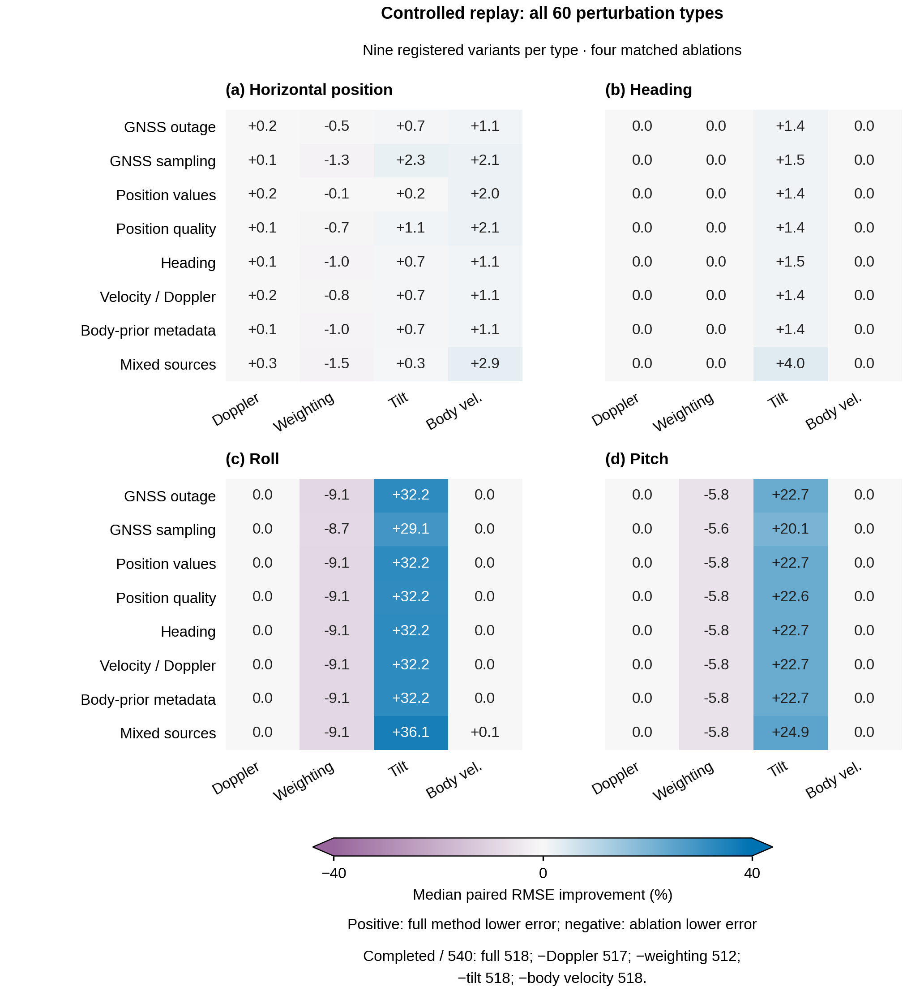

正文重绘10图图1 紧凑四足平台与侧向短基线

按真实安装照片生成技术示意，保留蓝色安装组件、四足本体和0.35m侧向基线。去掉会暗示精确IMU位置的错误引线。
原始照片保留；该图是image生成的示意，不替代实物证据。当前为原生像素讨论稿。
image原生示意图
图2 共同状态中的方向与机身观测融合

image重新制作科研信息流。IMU进入传播，GNSS与倾角进入观测更新，机身速度经既有方向/倾角旋转，质量与创新决定Rs。
逐项修正生成稿中的错误连线及P/Rs混写，最后核对同一状态输出与辅助事件条件。当前为原生像素讨论稿。
image原生示意图
图3 路线、局部位置与横向误差

三场景×完整路线/厘米级局部几何/同一时间邻域的V3与双位置IEKF误差。固定窗口与原参考运动绑定。
只在同一物理点可比较的数据上作局部曲线；没有从标量误差伪造外部方法轨迹。
PDF
图4 相同相对运动与不同全局方向

不同初始航向给出旋转轨迹；移除各自已知初始旋转后七条轨迹重合；局部转角一致；五窗口保留四个全局自由度。
这解释自身观测不能唯一确定全局方向；未用参考拟合旋转，也没有重跑机器人估计。
PDF
图5 各方向处理路线的精度与可用性

本文输入方向与原生实际采用的观测，与RTKLIB四配置、C-LAMBDA、C-WLS、DD-KF同组比较；FAR/PAR零接受为N/A。
新增的是配图层观测匹配统计：用冻结GNSS18、原日志、已有参考时序，未以posterior yaw冒充输入方向；各自支持单列。
PDF
图6 姿态消融的全时序与全窗差异

保留三场景×yaw/roll/pitch布局，并在各面板用对应颜色列出RMSE，直接读出差异。
F01/F03/F04解释持续方向作用，A05/F04解释倾角作用；不平滑或抽样来放大优势。
PDF
图7 机身速度辅助何时改善平移

明确全部GNSS中断时辅助暂停、保留方向时辅助持续；标出20s恢复，保留九布置统计与完整方法米级细节。
凸起为中断期间误差累积，恢复时被绝对观测校正。两列不是仅改变方向有无的独立二因素控制。
PDF
图8 来源质量处理的收益与代价

代表yaw时序与位置误差ECDF并列；实际R倍率用分布概括；541状态和513配对变化清楚呈现。
示例yaw29.80→2.70°，H3.17→3.56m；513配对H中位变化+0.981mm。减少发散与更准确分别解释。
PDF
图9 滤波与因子图路线的整体比较

双/单位置IEKF文献与标定参数、基线保留IEKF、OiSAM两协议、GINav均有去向；原始码FGO另列信息层。
六个面板分别保留自然精度、同点共同支持、全窗输出和18中断条件；失败没有赋予任意RMSE坐标。
PDF
图10 完整受控扰动与内部消融

全部60扰动类型按八类受影响信息组织，四个单开关对照分别看H/yaw/roll/pitch的配对变化。全61类×11配置保留两幅扩展图。
核心每类九个是注册变体，并非九次独立实机试验。记录属于semisynthetic/controlled replay，不能自行改称硬件在环。
PDF